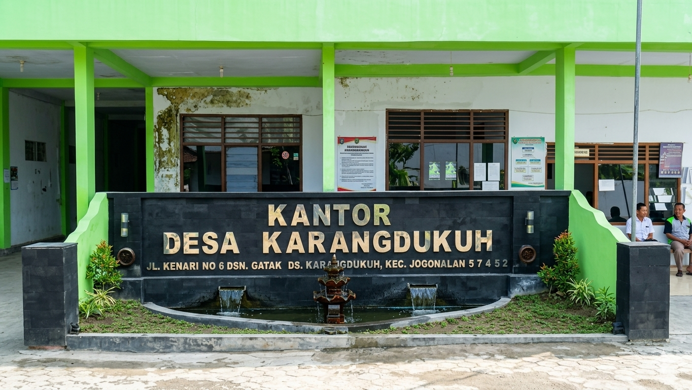

Profil

Tentang Desa
Desa Karangdukuh merupakan salah satu desa yang memiliki potensi sumber daya alam dan masyarakat yang kuat dalam mendukung pembangunan desa yang berkelanjutan. Pemerintah Desa Karangdukuh berkomitmen untuk memberikan pelayanan yang baik melalui pemanfaatan teknologi informasi dan partisipasi aktif warga.
Visi
"Mewujudkan Desa Karangdukuh yang Berbudaya, Maju, Sejahtera, dan Berbasis Digital."
Misi
- Meningkatkan kualitas pelayanan administrasi publik.
- Mendorong kemandirian ekonomi melalui sektor UMKM lokal.
- Melestarikan lingkungan dan nilai-nilai kegotongroyongan warga.
- Meningkatkan kualitas pendidikan.
- Mendorong partisipasi aktif masyarakat.